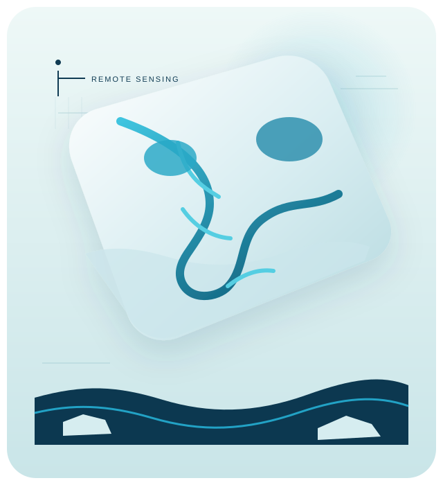

Cryosphere Hydrology / Environmental Remote Sensing
Jiahui (Cris) Qiu Doctoral Researcher in Cryosphere Hydrology

About
Observing a changing cryosphere
Research
Research Interests
From ice-sheet meltwater to pan-Arctic freshwater and ice dynamics, observed with satellites, in situ data and intelligent models.

Field Notes
Selected Work
Selected Publications
Writing
Writing & Updates
Research stories, field observations, data visualization and outreach.
Contact